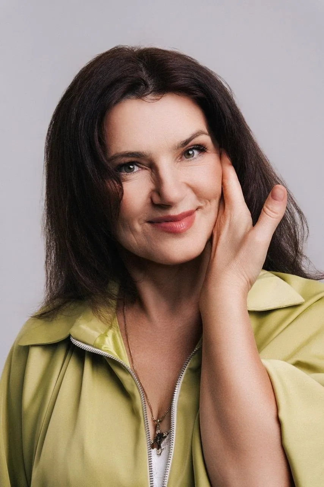
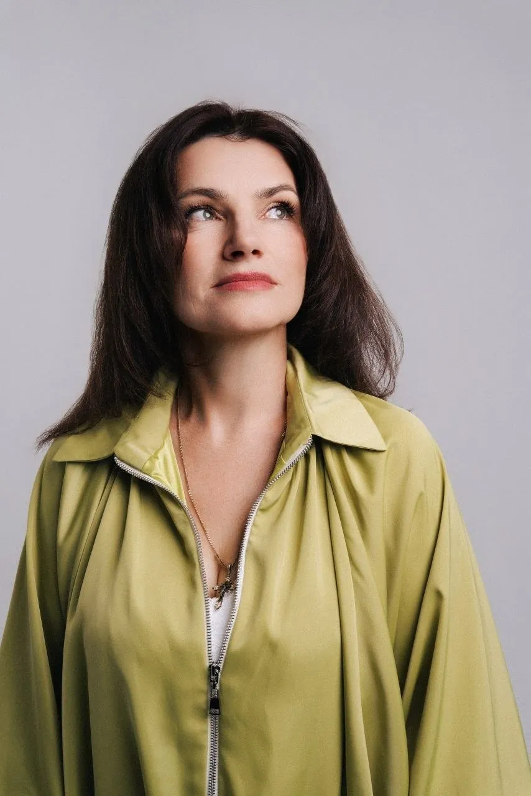
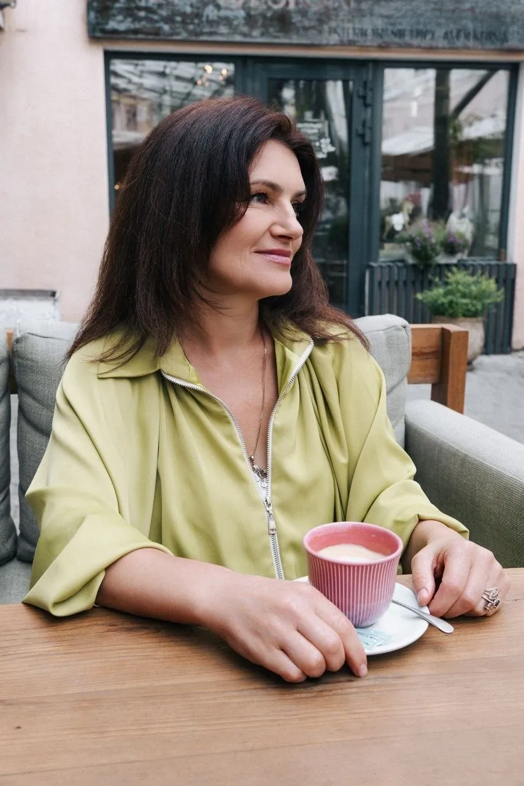
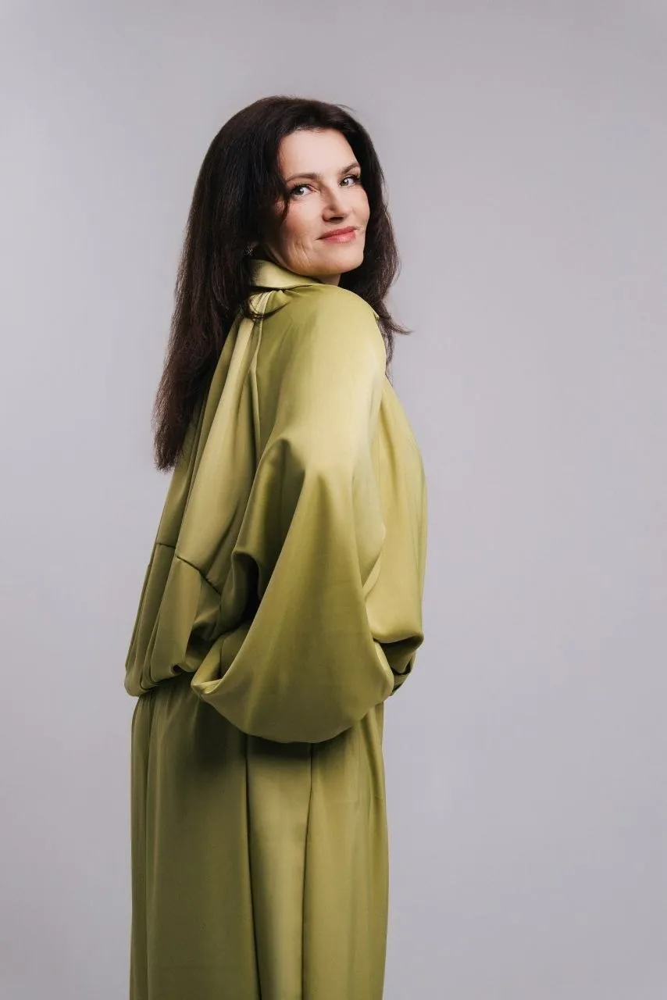

01
Программа из девяностых
Шарики, «а теперь горько» и конкурс с яблоком между коленями. Я собираю программу с нуля под ваших гостей — под их возраст, профессии и то, как они шутят между собой.

Видео-визитка
Вы платите за вечер, который будут вспоминать годами. А получаете конкурс с шариками, микрофон в ухо и тайминг, который держится на честном слове. Вот что я делаю иначе.
Шарики, «а теперь горько» и конкурс с яблоком между коленями. Я собираю программу с нуля под ваших гостей — под их возраст, профессии и то, как они шутят между собой.
Пошлость на юбилее при родителях и детях убивает вечер за минуту. Мой юмор работает на всю комнату сразу — от бабушки до подростка, и никого не ставит в неудобное положение.
Сценарий идёт по бумажке, даже когда гостям уже не смешно. Я меняю ход вечера по ситуации — десять лет практики учат читать зал по первым пятнадцати минутам.
Заказчик бегает между кухней, диджеем и опоздавшими гостями вместо того, чтобы праздновать. Я беру на себя тайминг и подрядчиков, а вы весь вечер остаётесь гостем своего праздника.
Микрофон не отпускают, солируют вместо юбиляра. Главный герой вечера — не я. Моя работа в том, чтобы гости говорили о вас, а не обо мне.
Не приехал звук, сдвинулась подача блюд, потерялся тамада. Договор, репетиция с площадкой и запасной план на каждый блок программы — чтобы день прошёл по плану.

О ведущей
Хороший вечер выглядит так, будто он сложился сам собой. На самом деле за этим стоят недели подготовки — и это моя часть работы.
Я — поющая ведущая и лауреат международных вокальных конкурсов. Провожу мероприятия в Москве и области больше десяти лет: юбилеи и дни рождения, свадьбы, корпоративы и семейные торжества. За это время через мои вечера прошли и камерные ужины на двенадцать человек, и залы на несколько сотен гостей.
Я не работаю по универсальному сценарию. Перед каждым событием мы разбираем, кто придёт, что это за люди, что для них важно и над чем они смеются. Из этого собирается программа, в которой гостям хочется участвовать, а не отсиживаться за столом.
В день события я беру одно мероприятие. Никаких перебежек с площадки на площадку: ваш вечер получает всё внимание целиком.
Свободные даты обсуждаем лично.
Отвечаю в течение дня.
Моё кредо
«Влюбитесь в героя. В артиста. В его семью. В тему, в ситуацию. В историю. Переживите эмоции, сделайте их своими — и только тогда зритель уйдёт из зала потрясённым. А иначе зачем всё это?»
— Инна София
Коротко о практике
лет провожу мероприятия в Москве и области
средняя оценка клиентов на Профи.ру
отзывов на Профи.ру, каждый после реального заказа
событие в день — ваш вечер не делится ни с кем

С мероприятия
Программа собирается под повод и под гостей. Стоимость зависит от даты, площадки и продолжительности вечера — итоговую сумму называю после разговора.
Вечер, где виновник торжества не отсиживается во главе стола, а становится главным героем истории. Разговорные блоки вместо конкурсов на скорость.
От камерного ужина на двенадцать человек до большого праздника. Формат подстраивается под компанию, а не наоборот.
Выездная церемония, банкет и вечерняя часть. Работаю в связке с площадкой, диджеем и фотографом, чтобы день шёл по таймингу.
Награждения, итоги года и неформальная часть без принудительного веселья. Коллеги уходят с ощущением, что вечер стоил их времени.
Самая занятая дата в году — бронируется заранее. Программа с учётом того, что половина зала уже отметила до вашего начала.
Годовщины, крестины, встречи поколений. Тёплый формат, где разговор важнее громкой музыки.
Деловой формат: официальная часть, спикеры, фуршет. Держу регламент и не даю мероприятию расползтись по времени.
Школа и университет: программа для выпускников, которая одинаково нормально смотрится и для родителей в зале.
От первого сообщения до последнего тоста. Никаких сюрпризов в день события — всё, что можно обсудить заранее, обсуждается заранее.
Пишете мне повод, дату и примерное количество гостей. Отвечаю, свободен ли день, и называю вилку по стоимости.
Встречаемся лично или созваниваемся. Разбираем, кто придёт, какая атмосфера нужна и чего вы точно не хотите видеть на своём празднике.
Договор, предоплата и забронированная дата. С этого момента день ваш — других мероприятий на него я не беру.
Пишу программу под ваших гостей, согласовываю блоки и тайминг, связываюсь с площадкой, диджеем и фотографом. Вы читаете и правите.
Приезжаю заранее, проверяю звук и свет, встречаю гостей. Дальше вы просто празднуете, а вечер идёт сам собой.
Отзывы клиентов с Профи.ру — как написали, без правок по смыслу. Оставить отзыв там можно только после реального заказа.
5,0★★★★★Профи.руИнна — большой профессионал, сделала наш праздник активным, забавным. Прекрасно поёт, продуманный сценарий. Рекомендую 💯
★★★★★Профи.руМы отмечали юбилей нашей бабушки. Престижный возраст 80 лет. На подготовку и проведение праздника выбрали Инну. Заранее готовила сценарий праздника, интересовалась в подробностях о юбиляре, о её профессиональной, личной жизни, о лучших и ярких моментах. Гостям и самому юбиляру было приятно услышать о себе то, о чём «по жизни забывается». Наворачивались слёзы радости)
Сильная сторона Инны — умение изменить сценарий и мгновенно адаптировать его под настроение гостей. Наши были скромны и молчаливы, но уже к середине праздника плясали, как говорится, были «в своей тарелке».
А ещё Инна прекрасно поёт, имея опыт в преподавании вокала. Я рекомендую замечательную поющую ведущую Инну для проведения ваших мероприятий.
★★★★★Профи.руИнна, просто огонь. Всё как я и хотела, спокойно, размеренно. Даже сына в ростовую куклу одела. А как она бесподобно поёт вживую, заслушаешься. Очень рекомендую, цена и качество соответствуют.
★★★★★Профи.руОтмечали день рождения мамы, 66 лет. Гости были разного возраста — от 7 до 75 лет. Весело было всем.
Инна, замечательная ведущая, приехала на полчаса раньше, с помощником и со своей техникой для музыки. Со всеми познакомилась и в течение праздника всех активно, но ненавязчиво привлекала к празднованию и конкурсам. Было очень весело. Также исполнила нам несколько песен вживую.
Празднование у нас было в Московской области, 60 км от Москвы. Очень рекомендую Инну.
★★★★★Профи.руВесь период подготовки Инна была на связи, согласовывалось всё до мелочей. Подобрала песни и подготовила видеоряд, провела конкурсы. Особенно понравилось личное исполнение песен. Организовала много сюрпризов от родственников. Рекомендую, вечер удался. Огромное спасибо.
★★★★★Профи.руИнна, замечательная ведущая, не ожидала, что всё будет так круто, ни разу не пожалела, что выбрала именно её. Не оставила без внимания ни одного из гостей, зажигала весь вечер и дарила только приятные эмоции. Очень её рекомендую, настоящий профессионал в своём деле. Спасибо вам большое за вечер, в дальнейшем при любом знаменательном событии обязательно обращусь именно к ней. Ещё раз спасибо)))
★★★★★Профи.руХочу сказать спасибо Инне за проведение праздника! Весь вечер Инна дарила гостям хорошее и праздничное настроение. Собрала много информации о юбиляре. Вовлекала гостей в разнообразные конкурсы и ненавязчиво объединяла людей, которые были незнакомы друг с другом. Также у Инны прекрасный голос, и она исполнила нам несколько композиций. Благодаря Инне вечер прошёл весело и интересно. Хочу пожелать Инне успехов в её нелёгком деле и дальнейшего процветания!
★★★★★Профи.руОтмечала свой юбилей. Праздник прошёл замечательно. Не было никаких проблем со сценарием, всё заранее обсуждалось, учитывались все пожелания. Все остались довольны. Инна — прекрасный специалист своего дела, сама исполняет песни, может подстроиться под любую ситуацию. Лёгкая в общении. Всё прошло на ура! Однозначно всем рекомендую.
★★★★★Профи.руВсё прошло замечательно, весело, все гости принимали участие в интерактивах! Никто из гостей не остался без подарочка! Всем понравилось, спасибо, Инна, было здорово 🍓
16+ Все отзывы★★★★★Профи.руСпасибо Инне, что праздник прошёл на высоте! Было весело и интересно! Всем рекомендую!
Telegram-канал
Если вашего вопроса здесь нет — напишите, отвечу лично.

Что вы получаете
Программа собирается из ваших людей и вашего повода. Поэтому её нельзя повторить на чужом празднике — и поэтому её запоминают.
Бронирование
Напишите повод и дату в Telegram или WhatsApp — отвечу, свободен ли день, и сразу назову вилку по стоимости. Без обязательств и без навязчивых звонков.